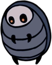

Falaises Hurlantes
Une région peu peuplée située au nord-ouest d'Hallownest, séparant le royaume d'un vaste territoire inconnu.
Carte
Lore
Le Roi Pâle a accordé la sensibilité aux insectes sauvages par l'intermédiaire de sa balise. Ceux qui ont choisi de quitter le royaume ont perdu leur mémoire. La plupart des insectes vivant dans les terres désolées à l'extérieur d'Hallownest ne sont pas intelligents, car la sapience semble être une faiblesse dans leur environnement.
Connexions
Les Falaises Hurlantes sont reliées à ces zones :
Ennemis
-
Baldur
Une créature agressive dès la naissance. Se met en boule et se propulse sur les intrus qui s’aventurent sur son territoire. Les chasseurs plus jeunent se réjouissent d’attraper ces créatures pour les faire rouler sur le sol et jouer avec. Si cela vous donne envie, je vous encourage à faire la même chose.
-
Crawlid

Un charognard timide. Arpente les cavernes à la recherche de nourriture. Triste et pitoyable. Mérite à peine d’être tué.
-
Ancien Baldur

Une créature volumineuse, recouverte d'une armure épaisse. Se rétracte à l'intérieur de sa coquille lorsqu'elle est menacée. Au fur et à mesure qu'elles vieillissent, ces créatures deviennent trop lourdes et grumeleuses pour pouvoir rouler comme elles le souhaitent. Alors, elles se recroquevillent et s'isolent du monde. À quoi peuvent-elles penser à l'intérieur de leur coquille ? Peut-être à des temps meilleurs.
-
Carcasse Malmeneuse
La carapace vide d'un insecte, animé par une force étrange. Attaque férocement toutes les créatures sur son chemin qui ne sont pas infectées. Ces corps sans vie ambulants sont remplis d'une brume orange épaisse. Ça a un goût un peu sucré et maladif. C'était vraiment immonde. Je vous conseillerais de ne pas les manger après les avoir tués.
-
Carcasse Cornue

La carapace vide d'un insecte, animé par une force étrange. Utilise sa longue corne pour attaquer toutes les créatures sur son chemin qui ne sont pas infectées. Même après leur mort, ces insectes sont tellement arrogants. Ils sont beaucoup trop fiers de leur longue corne ! J'aime bien la leur arracher.
-
Carcasse Sauteuse

La carapace vide d'un insecte, animé par une force étrange. Il saute et attaque instinctivement toutes les créatures sur son chemin qui ne sont pas infectées. Les insectes de l'ancien Hallownest ne chassaient pas eux-mêmes leur nourriture. Ils préféraient qu'elle leur soit directement apportée. Cela explique pourquoi ils étaient si faibles. Cela explique aussi pourquoi leur royaume s'est effondré pour disparaître dans l'oubli.
-
Tiktik

Une créature se servant de ses petites griffes acérées pour grimper le long des murs et sur les toits. Passe son temps à arpenter les routes et les cavernes proches de la surface de ce royaume. Si vous êtes patient, il vous suffit d’attendre qu’elles viennent à vous pour les tuer.
-
Mouche Vengeresse

Un prédateur volant. Poursuis ses proies sans relâche. Ces féroces petits chasseurs pourchasseront même les créatures qui font plusieurs fois leur taille. Admirable! Cependant, j’en ai dévoré des centaines sans avoir fait le moindre effort, car ce sont des créatures très faibles.
Boss de la Zone
Gorb
Gorb est l'un des Guerrier des Rêves. Aussi apellé "le Grand Sage", il était une créature mystique avec un cerveau distendu qui prétendait être omniscient. Il incitait les autres à vénérer son esprit et à s'élever avec lui vers un autre niveau d'existence. Sa dépouille a été enterrée sur une colline au sommet des Falaises Hurlantes, sous une pierre tombale gravée à son effigie.
Évènements
- Obtention d'un morceau de masque
- Accès à Chambre de la Lanterne du Cauchemar (DLC)
- Station Coléoptère : Tanière des Coléoptères
- Rencontre du Maître d’Aiguillon : Mato
- Rencontre de Monsieur Champignon #4